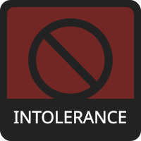
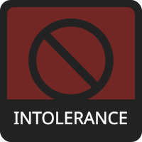
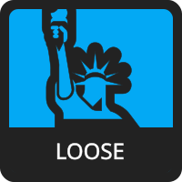
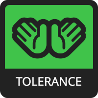
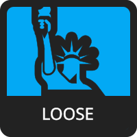
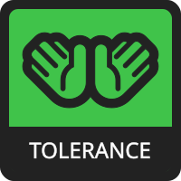

 




This is a fork of 8values, but centered around transmedicalism. Non-transmedicalists can take this test, but the language is oriented towards transmedicalists and may be offensive to you. Do note that it is possible to be a transmedicalist without being transsexual (however you should take this test as if you are a transsexual). The language in this test may also be biased towards specific opinions in general, particularly in cases where it is difficult to use neutral language. You will be presented with a statement, and then you will answer with your opinion on the statement, from Strongly Agree to Strongly Disagree, with each answer slightly affecting your scores. At the end of the quiz, your answers will be compared to the maximum possible for each value, thus giving you a percentage. "Transsexual" will generally be treated as separate from "transgender" (and LGBT) in this quiz, but keep in mind that many transgender-identified people are really just transsexuals who are very, very woke.
There are questions in the test.
each has two opposing values assigned to them. They are:
BINARY
Those with higher Binary scores believe in only two genders and do not believe in non-binary identities.
GENDER
NON-BINARY
Those with higher Non-Binary scores believe in more than two genders, whether that be three, four, or infinite, and believe in non-binary identities.
STRICT
Those with higher Strict scores believe in sex-based dysphoria, in which genital dysphoria is required.
DYSPHORIA
LOOSE
Those with higher Loose scores believe in gender-based dysphoria, in which genital dysphoria is not required.
PROTECTION
Those with higher Protection scores believe that only transsexuals have the right to use the "trans" title, and that "transgender" people aren't trans at all.
CLASSIFICATION
ABANDONMENT
Those with higher Abandonment scores believe that "transgender" people can also be referred to using the word "trans". They may believe that this is just something we should accept, or that transsexuals should try to abandon the "trans" title and adopt a different term that doesn't have the word "trans" in it.
SHAME
Those with higher Shame scores believe that transsexualism is nothing but a bad thing. Some may even believe that it should be eradicated from future births as much as possible via new technological developments. They usually believe that it is best to keep it a secret, and that those who have it should transition as soon as they find out.
OUTLOOK
PRIDE
Those with higher Pride scores believe that transsexualism isn't necessarily a bad medical condition to have, and that it's normal to be proud of it.
INTOLERANCE
Those with higher Intolerance scores are more critical of the LGBT movement as a whole.
ACCEPTANCE
TOLERANCE
Those with higher Tolerance scores are more supportive of the LGBT movement as a whole. While this is not directly related to transsexuality on its own, some questions will involve both, and it is here for reference.
DISUNITY
Those with higher Disunity scores tend to believe that only those near the center of the political spectrum can be realistically worked with. They also believe that reasoning with those who are explicitly anti-trans (or implied to be) is impossible, too difficult, or simply not worth it. Those with very high Disunity scores may believe that it is simply impossible for an extremist to also be a transmedicalist.
ALLIANCE
UNITY
Those with higher Unity scores believe that working with the entire political spectrum, even on the far ends, should be attempted. They also believe that reasoning with as many people as possible (usually with the goal of those people becoming transmedicalists), including those who are explicitly anti-trans (or implied to be), is a fundamental aspect in gaining rights.
In addition to matching you to the values, the quiz also attempts to match you to a trans-related ideology (some I've heard of, some have been made up). The language used will be biased. This is a work in progress and is much less accurate than the values and axes, so don't take it too seriously. The way it works is by comparing how you responded to certain questions to how I think followers of each ideology might respond.
¯\_(ツ)_/¯